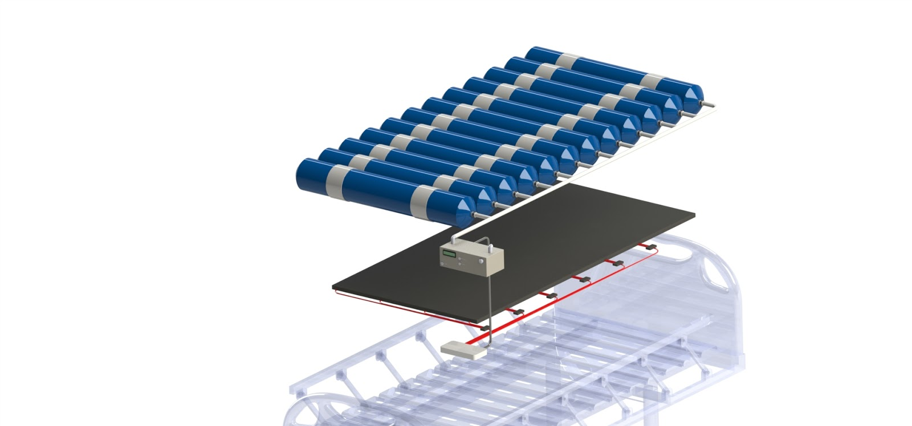
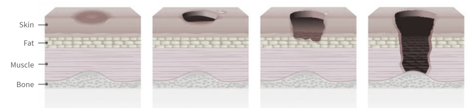
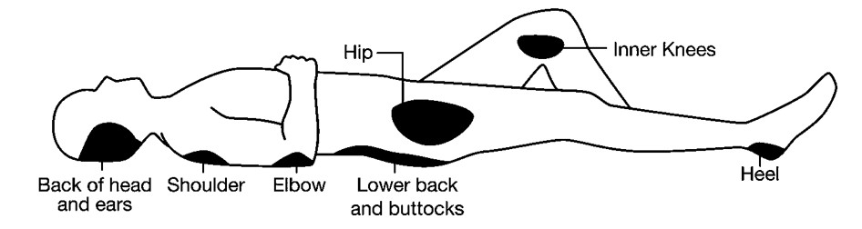
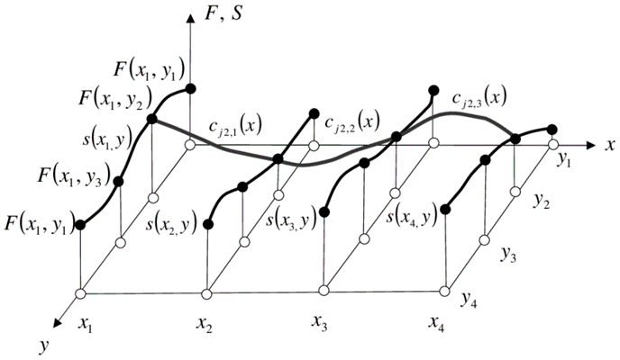

The Atlas P1
Intelligent pressure redistribution through variable stiffness technology
Presure Injuries - Medical Background
Pressure injuries develop due to consistent pressure on a region of tissue and range from a minor irritation to a deep wound.
Specific areas of the body are at higher risk
Problem Background
$11+ billion annually
Pressure injuries increase the cost of treatment due to the need for more intensive monitoring and increased nurse workload.
60,000 Deaths
Patients who have a pressure injury have a 10% increase in mortality rate.
6 Days Longer Hospital Stay
Recovery times increase, leading to patients staying longer and using more hospital resources.
Current Solutions
A subjective risk assesment is done using a manual rating, known as the Braden Scale
Nurses and caregivers visually inspect the skin to look for signs of pressure injuries, often needing to turn patients to do so.
If a patient develops a pressure injury, or is at particularly high risk of doing so they are manually repositioned by hand to change pressure distribution. This repositioning can take up to 30 minutes and four nurses to do and it sometimes still isn't enough.
Solution Overview
Atlas Medical is developing a variable stiffness mattress to prevent pressure injuries. The stiffness of individual air cells within the mattress are modified using a custom control system.

Data flow
The pressure measurement system and pneumatics control system combine to form a true Mechatronics system, combining software, electrical and mechanical aspects of design. The Atlas P1 can be broken into three distinct layers:

Key Innovations
Column Control
To control the reading of voltages from individual columns a custom PCB was designed and manufactured. The PCB features three ADCs and signal conditioning circuitry.

Row Control
A modular PCB was developed and manufactured to control which rows in the sensor matrix are enabled at any given time. The board features a swappable design and a 16 channel demultiplexer

Statisitical Analysis
By treating the sensor information as an image computer vision techiniques are applied to enhance and analyze the signal. The sensor data is upsampled using bicubic interpolation and a characterization process is used to develop a deblurring method which works to partially reverse the air diffusion properties of the air cells.
